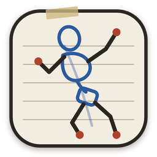
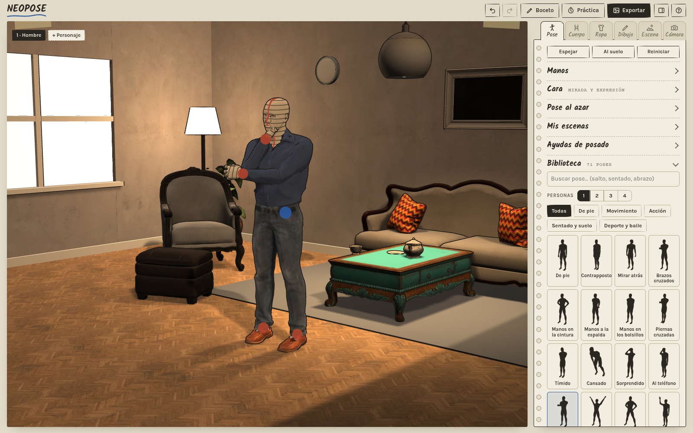

NEOPOSE
Figura 3D para dibujar · software libre (GPL-3.0)

Instalar con un clic
Abre el archivo con tu tienda de aplicaciones (Bazaar, GNOME Software, KDE Discover). Añade este repositorio y, si hace falta, Flathub para el runtime.
Instalar NEOPOSE Solo añadir el repositorioCon el repositorio añadido, NEOPOSE aparece en tu tienda y se actualiza con el resto de aplicaciones.
Desde la terminal
flatpak remote-add --user --if-not-exists flathub https://dl.flathub.org/repo/flathub.flatpakrepo
flatpak remote-add --user --if-not-exists neopose https://pmirall.github.io/NEOPOSE/neopose.flatpakrepo
flatpak install --user neopose io.github.pmirall.NEOPOSEPara actualizar: flatpak update. Para desinstalar: flatpak uninstall io.github.pmirall.NEOPOSE.
Otras descargas
Windows (instalador y portable), Android (APK), AppImage y el Flatpak en un solo archivo: versiones en GitHub. Código fuente: github.com/pmirall/NEOPOSE.
El repositorio está firmado con la clave GPG 83D9 ABFB 482D B008 B120 B525 EA2E 37C9 4B82 E2F3.